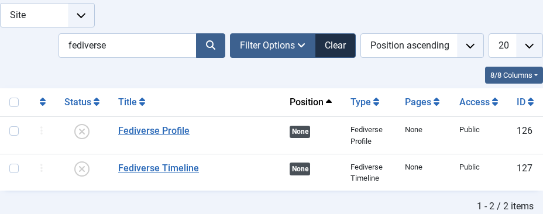
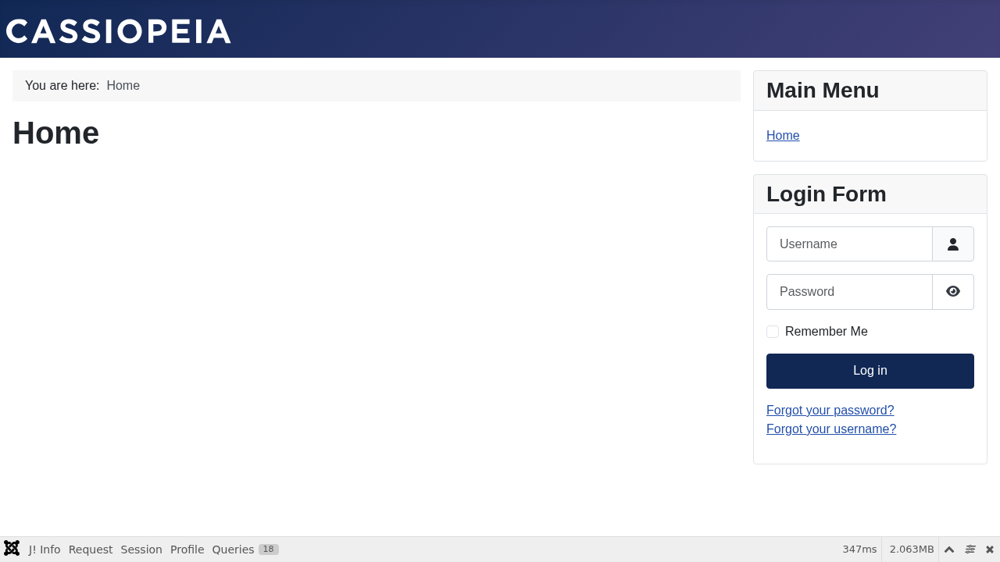

Reactions Module
| 🏠 Tutorial Home | ← Following and Followers | Domain Policies → |
The Reactions module
(mod_fediverse_reactions) displays live engagement counts —
likes, boosts, and replies — directly on a Joomla article page. The
counts are sourced from inbound ActivityPub activities stored in the
Fediverse inbox and are updated every time the scheduler processes the
queue. |
Prerequisites
- Joomla Fediverse installed and both plugins enabled (see Tutorial 01 — Installation)
- At least one local actor with published articles (see Tutorial 04 — Publishing Content)
- The Fediverse scheduled tasks enabled and running (see Tutorial 09 — Scheduled Tasks)
Step 1: What the Reactions Module Shows
Each article that has been federated by Joomla Fediverse can accumulate three types of reactions from the wider Fediverse:
| Reaction | ActivityPub type | What it means |
|---|---|---|
| ❤ Likes | Like |
A remote user favourited the article note |
| 🔁 Boosts | Announce |
A remote user boosted (reshared) the article note |
| 💬 Replies | Create(Note) |
A remote user replied to the article note |
The module queries the local #__fediverse_inbox table
for activities whose object URI matches the article’s
ActivityPub object URI, then renders the totals in a configurable
template.
Step 2: Install and Configure the Module
- In the Joomla administrator, navigate to Extensions → Modules → New.
- In the module type selector, search for Fediverse and choose Fediverse Reactions.
- Fill in the module title (e.g. Reactions).
- Under Module tab, configure the display options:
- Show Likes: Yes / No
- Show Boosts: Yes / No
- Show Replies: Yes / No
- Icon style: text labels or emoji icons
- Under Menu Assignment, choose Only on the pages selected and pick the article menu items (or use On all pages for a global placement).

The Reactions module configuration form. Enable the counts you want to display and set the position.Step 3: Assign the Module to a Position
Set the Position field to the template position that
appears on single-article views. In the default Cassiopeia template,
position-7 is rendered below the article body. You can also
use after-article if your template defines that
position.
After saving, the module will appear on every article page included in the menu assignment. If no reactions have been received yet, it renders empty (or hidden, depending on the Hide when empty option).
Step 4: Generating Reactions for Testing
To see live data, a remote Fediverse account must interact with one of grace’s articles:
- Ensure
alice@peer.localhostfollowsgrace@yoursite.example(see Tutorial 05). - From the Peer, navigate to alice’s timeline and open the boosted article note.
- Click Favourite (Like) or Boost (Announce).
- Wait for the scheduler to process the incoming activity (or trigger it manually from System → Scheduled Tasks → Run Now).
Once the inbox worker has processed the Like or
Announce activity, the reaction count increments.
Step 5: Verify on the Front End
Navigate to the article on your site’s front end. The Reactions module should now appear at the assigned position and display the updated counts.

After alice likes the article on the Peer, the Reactions module shows 1 like on the front-end article page.Step 6: Like and Boost Buttons
The Reactions module can display optional Like and Boost action buttons alongside the reaction counts. These buttons let site visitors interact with content from their own Fediverse account without leaving your site.
Enabling the Buttons
| Option | Default | Description |
|---|---|---|
| Show Like Button | Yes | Displays a ❤ Like button below the reaction counts |
| Show Boost Button | Yes | Displays a 🔁 Boost button below the reaction counts |
How Visitors Use the Buttons
When a visitor clicks Like or
Boost, a small prompt appears asking them to enter
their Fediverse handle (e.g. @you@mastodon.social). The
site remembers the handle in the browser for future interactions. Once
confirmed, the visitor is redirected to their home server, which opens
the article in context and lets them complete the like or boost directly
from their own account.
Why a redirect instead of acting directly? The Fediverse is a network of independent servers. Each server manages its own authentication and signing. Redirecting to the visitor’s home server is the standard, privacy-preserving approach — it works with every ActivityPub server (Mastodon, GotoSocial, Friendica, Hubzilla, etc.) without requiring your site to handle third-party credentials.
Disabling the Buttons
Set Show Like Button and Show Boost Button to No in the module configuration if you prefer a read-only reactions display.
Step 7: Inline Reaction Counts via Shortcode
In addition to the module, you can render the same live counts
inline anywhere in article content using the
{{fediverse:reactions}} shortcode:
This post has {{fediverse:reactions}} so far.On the front end this is replaced with the same counts the module
shows (e.g. ❤ 3 · 🔁 1 · 💬 2). The shortcode requires the
Content - Fediverse Tags plugin to be enabled — see Tutorial 10 — Shortcodes for full
details.
Common Issues
| Symptom | Likely cause | Fix |
|---|---|---|
| Module not showing | Not assigned to the correct position or menu item | Check Module → Menu Assignment and Position settings |
| Counts always zero | Scheduler not running or inbound activities not processed | Enable scheduled tasks (see Tutorial 09) and run them manually to verify |
| Module shows but counts don’t update | Content - Fediverse plugin disabled | Enable the plugin at Extensions → Plugins → Content - Fediverse |
| Counts appear on wrong articles | Multiple actors share the same article | Verify the article author is set to a single federated actor |
| Buttons appear but Copy button does nothing | Browser does not support the Clipboard API (HTTP or very old browser) | Ensure the site is served over HTTPS; the Clipboard API requires a secure context |